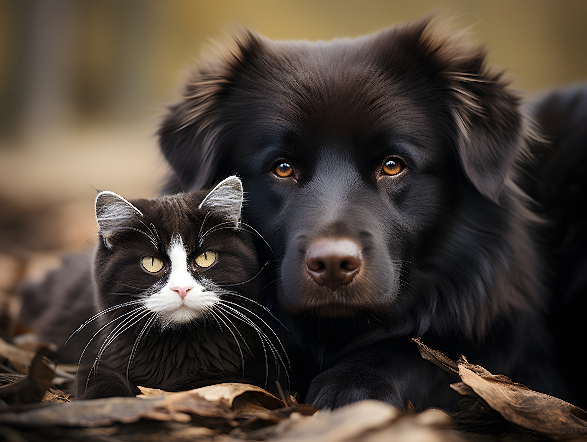

Dogwalk
Dogwalk é um serviço que oferece passeios diários para cães, promovendo exercício físico e socialização dos animais.
Carteira de vacinação
Carteira de vacinação para animais é um documento que registra as vacinas administradas de um animal de estimação.

Lembrete
Lembrete é um serviço que alerta os donos sobre as datas de vacinação necessárias para seus animais de estimação.